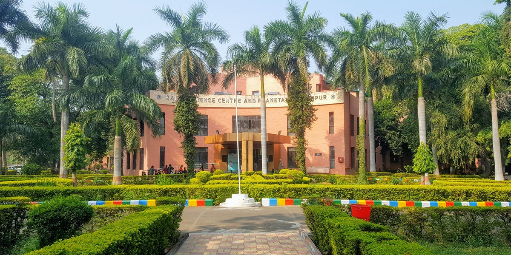

Home
Home Zero mile
Zero mile Deekshabhoomi
Deekshabhoomi Raman science center
Raman science centerRaman Science Center
The Raman Science Centre Nagpur is an interactive science center affiliated with Nehru Science Centre Mumbai. The center was developed to promote a scientific attitude, portray the growth of science and technology and their applications in industry and human welfare, and hold science exhibits. The centre is named after famous Nobel Prize winner Indian physicist Chandrasekhara Venkata Raman. The Raman Science Centre was inaugurated on 7 March 1992 and the planetarium was started on 5 January 1997. It is an exciting world on the bank of Gandhi Sagar. Here Science is no more a subject but an experience. Here science is a thing to play with & learn. Here one is free to spend a whole day in play with hands-on exhibits-press lever, turn wheels, roll balls, pull strings, press the buttons, look through the peepholes to make science work & enjoy. One can discover that, here concept of science is different: It is sheer fun.